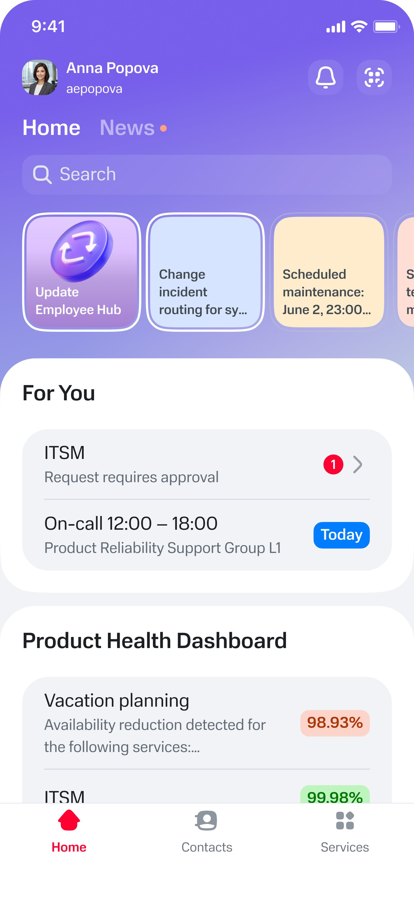
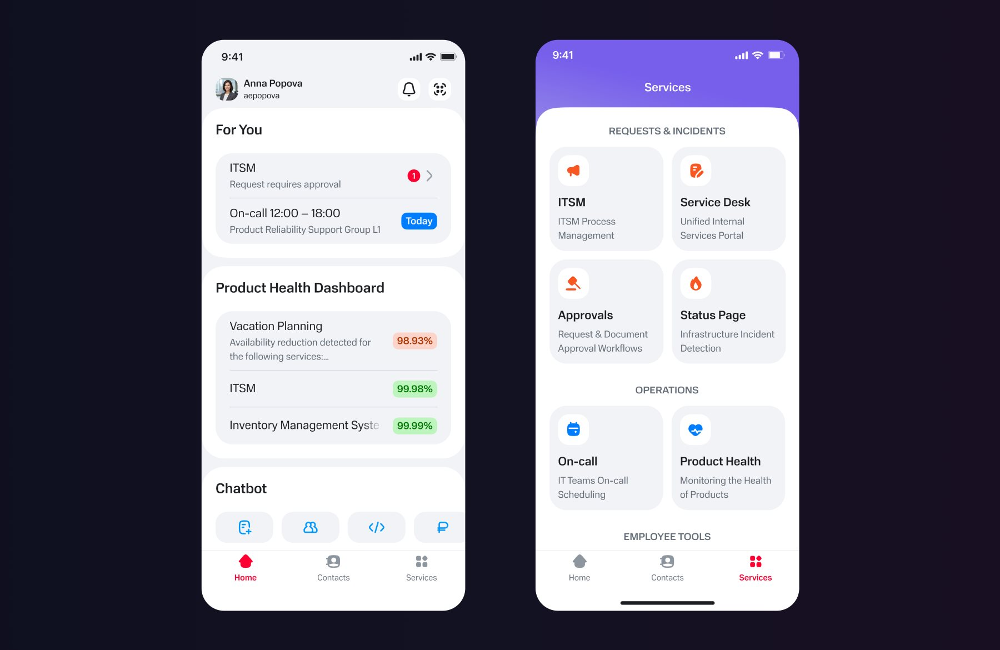
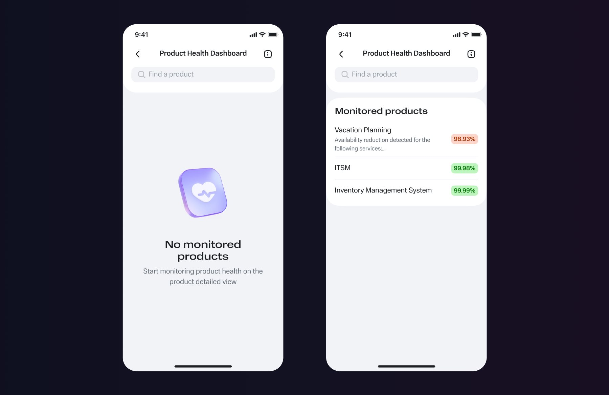
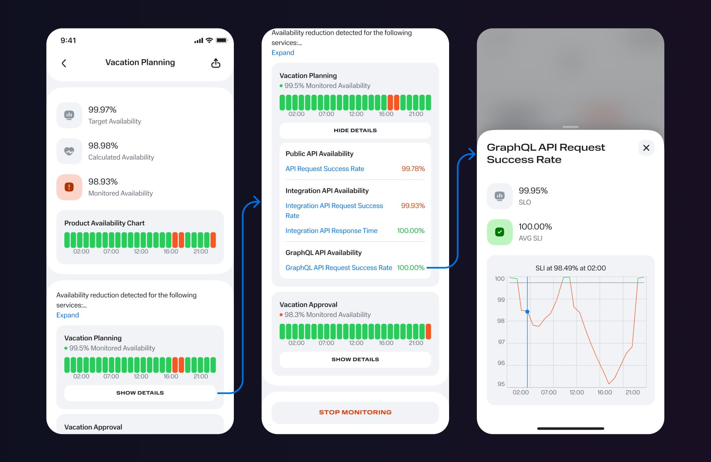

Project overview
- My role
- Sole Product Designer
- Scope
- End-to-end UX design for adapting a desktop monitoring experience to mobile.
- Key challenge
- Enable engineers to access critical service health information during time-sensitive situations without disrupting the existing desktop workflow.
- Outcome
- 530 users adopted the feature in the first month — approximately 13% of the app's monthly active users.
Context
The company had an internal service monitoring tool used to track product availability and system health. It was accessible only via a desktop web interface, which limited access during off-hours and incident situations.
With growing focus on reliability and incident readiness, there was a need to make critical service health data available on mobile devices.
Problem
The main challenge was enabling engineers to detect service degradation as early as possible during time-critical situations, without compromising consistency with the existing monitoring system.
During critical incidents outside working hours, engineers had to rely on a laptop and VPN to access service health data, adding friction and slowing down response time.
Constraints
The web version remained the single source of truth, so metric naming and backend structure could not be changed.
My approach
I analysed existing monitoring workflows with an analyst and identified two key usage modes:
- Normal monitoring — users check service health as part of their regular workflow.
- Incident response — users need to quickly understand whether a service is degraded and what requires attention.
Based on these two modes, I defined mobile as an incident-first experience, rather than a full replica of the web product.
I designed and validated wireframes and high-fidelity prototypes with stakeholders before development.

Key design trade-offs
The web version's metric names were technical and not always self-explanatory, but since it remained the single source of truth, renaming them on mobile would have broken consistency between platforms — so I kept them as they were.
Instead, I addressed usability through structure rather than naming: the app opens on a simple, color-coded status overview, and the original detailed metrics only surface one level down, for whoever needs to dig in. This matched the incident-first approach — checked quickly during an active incident rather than read end-to-end like the desktop dashboard — and meant mobile didn't have to reproduce the desktop screen's density to stay consistent with it.
The solution
Delivered a mobile monitoring experience that provides:
- Instant access to service health status
- Scannable overview with color-coded statuses optimized for incident response
- Consistent interpretation of metrics across web and mobile
- Reduced dependency on desktop access
Two entry points

Service overview page

Product availability drill-down flow

Outcome
530
users in the first month
~13%
of the app's monthly active users
- Extended a desktop-only monitoring experience to mobile, enabling product teams to access service health metrics during incidents and outside working hours.
- Enabled engineers to detect service degradation before incidents were created, allowing earlier response to emerging issues.
- Established a mobile entry point for operational monitoring without disrupting the existing desktop workflow.
Future Improvements
As the product evolves, I'd explore more flexible customization of the home screen widget, allowing users to prioritize and organize the services most relevant to them. This would better support users responsible for larger service portfolios while keeping the default experience simple for the primary audience.